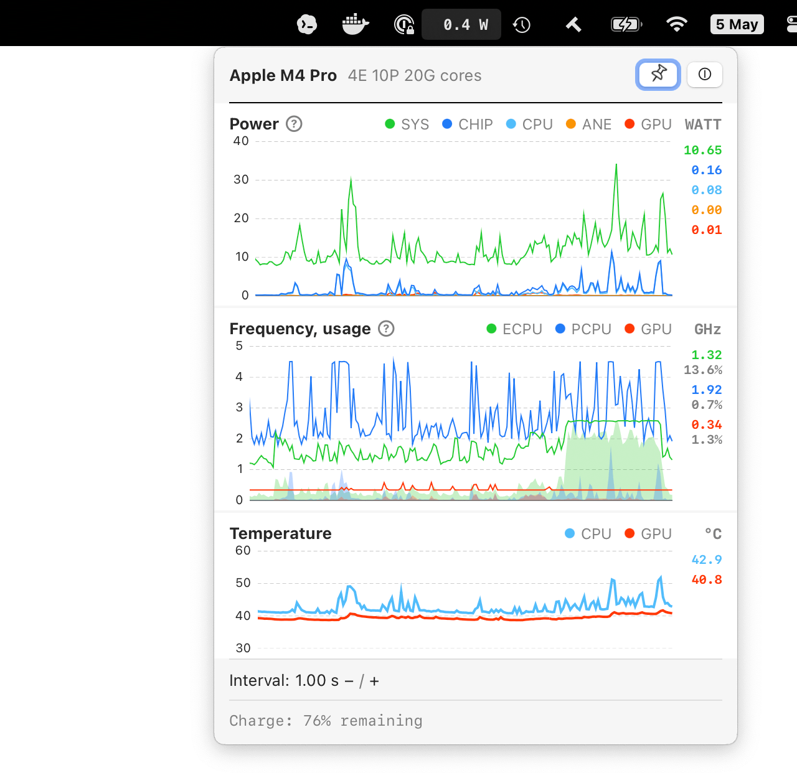

Apple Silicon monitoring
StillCore
Low-overhead power, frequency, usage, temperature, and battery session tracking from the macOS menu bar.
What it tracks
- Full-system, chip, CPU, GPU, and ANE power charts.
- CPU and GPU frequency, usage, and temperature charts.
- Battery sessions, including drain since the last charge.
- Update intervals from 100 ms to 10 seconds.
Requires an Apple Silicon Mac with macOS 14 or newer.
Metrics core by macmon. Special thanks to Alyosha Gusev.